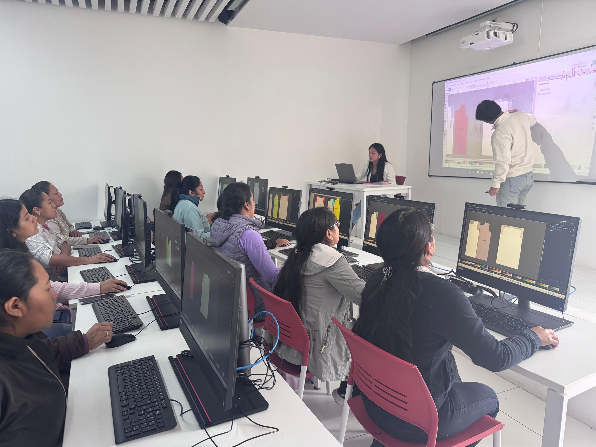

Escuchar y diagnosticar
Identificar las necesidades de capacitación en diseño y fabricación digital de los actores del sector textil.
PROYECTO 01 / VINCULACIÓN CON LA SOCIEDAD
Fabricación Digital como estrategia de fortalecimiento para los actores del área textil de la Economía Popular y Solidaria de la Zona 6
Descubre el proyecto ↓01 / EL PROPÓSITO
Acercar la fabricación digital a quienes dan vida al sector textil de la Economía Popular y Solidaria.
El proyecto busca fortalecer las capacidades de los emprendimientos asociativos e individuales textiles promovidos por el Instituto Nacional de Economía Popular y Solidaria (IEPS) Zonal 6, mediante capacitación en software, herramientas y equipos de fabricación digital.
La iniciativa responde a la necesidad de incorporar herramientas tecnológicas al diseño y desarrollo de patrones. El objetivo es que los participantes puedan crear sus propios prototipos y aplicar lo aprendido a sus procesos productivos.
Participan la carrera de Ingeniería Industrial y la Facultad de Ciencias Químicas de la Universidad de Cuenca, junto al IEPS Zonal 6.
Alcance y metas según la formulación del proyecto. La cifra de 90 personas corresponde a la población prevista; no representa un resultado final de capacitación.
02 / LÍNEAS DE TRABAJO
Un recorrido formativo que conecta las necesidades del sector con las posibilidades del laboratorio.
Identificar las necesidades de capacitación en diseño y fabricación digital de los actores del sector textil.
Desarrollar capacidades en software y herramientas de diseño para elaborar patrones y propuestas de producto.
Capacitar en tecnologías como impresión 3D y corte láser para el desarrollo de patrones, moldes y prototipos.

03 / EL PROCESO EN IMÁGENES
Las fotografías compartidas muestran sesiones de diseño, acompañamiento en el aula, encuentros en el FABLAB y exploración de piezas y patrones.
Un registro del trabajo entre participantes, estudiantes y docentes para acercar las herramientas digitales al contexto textil.
Recorre la galería ↓04 / QUIÉNES LO IMPULSAN
Universidad de Cuenca + IEPS Zonal 6
Carrera de Ingeniería Industrial
Facultad de Ciencias Químicas
Equipo consignado en el documento de formulación del proyecto.
05 / GALERÍA DEL PROYECTO
14 fotografías para conocer el contexto.
Selecciona una imagen para ampliarla.
Registro fotográfico proporcionado para este proyecto por el equipo del FABLAB.
El conocimiento se fortalece cuando se comparte.
Volver a Projects Hub ↗